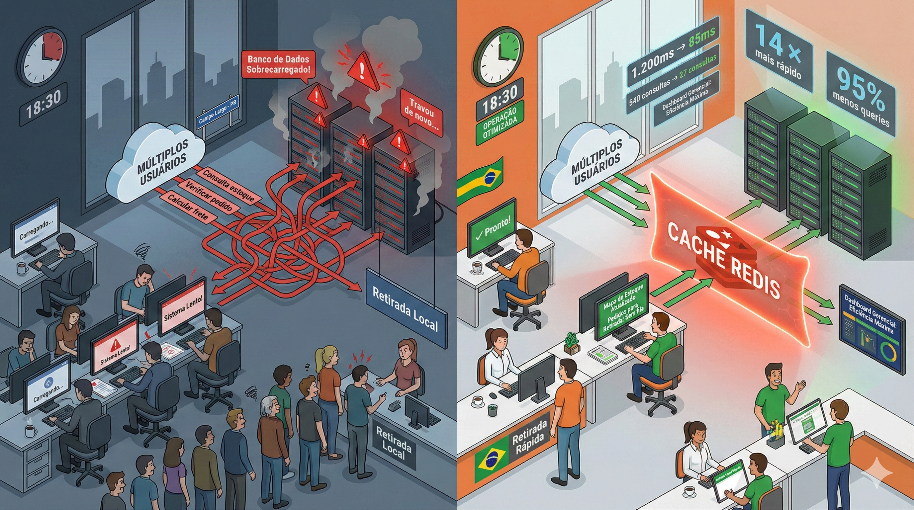

Redis como Solu��o de Cache para E-commerce em Cidades M�dias Brasileiras
Parte I: O Desafio do E-commerce nas Cidades do Interior
O Cen�rio: Campo Largo e o Brasil que Cresce Online
Campo Largo, munic�pio paranaense com aproximadamente 140 mil habitantes, a 30 km de Curitiba, representa o novo perfil de consumo digital. Cidades de m�dio porte (50�200 mil habitantes) impulsionam a compra online com retirada local — um comportamento que j� chega a 35% das prefer�ncias em v�rias regi�es.
Por Que a Retirada Local Importa?
- Desconfian�a com entrega residencial — risco de extravio em portas.
- Flexibilidade — retirar no trajeto trabalho/casa.
- Economia de frete — descontos por retirada.
- Gratifica��o instant�nea — comprar online, obter hoje.
- Verifica��o imediata — confer�ncia antes de sair da loja.
O Problema T�cnico Invis�vel
Como lidar com centenas de consultas simult�neas ao estoque quando clientes, operadores e integra��es acessam ao mesmo tempo? Sem otimiza��o: 180 usu�rios — 3 consultas ? 540 queries/minuto a um banco relacional. Lat�ncia explode, telas travam, desist�ncias aumentam.
A Matem�tica do Caos
- 500 pedidos recebidos/dia
- 300 retiradas/dia
- 180 usu�rios simult�neos no pico
- 12 operadores internos
Sem cache: tempo m�dio de query 200ms ? usu�rios esperam 8�12s por tela; abandono ~40%; custos 3x maiores.
Por Que Bancos Relacionais Sofrem?
- Alta propor��o de leituras (90%) vs escritas (10%).
- Dados mudam pouco minuto a minuto.
- Lock/�ndices pesam com volume.
- Parse + plano de execu��o a cada requisi��o.
O Que Precis�vamos
- Cache inteligente.
- Invalida��o autom�tica.
- Distribui��o multi-servidor (Tomcat + WildFly).
- Simplicidade de manuten��o.
- Custo baixo.
Entrou o Redis.
Parte II: Redis — A Transforma��o na Arquitetura
O Que — Redis?
Redis — a �geladeira� do software: dados na RAM para acesso em milissegundos (contra centenas em disco). Resposta instant�nea para leituras quentes.
Compara��o de Alternativas
| Solu��o | Pr�s | Contras | Decis�o |
|---|---|---|---|
| Memcached | Simples, r�pido | Sem persist�ncia, primitivo | ? |
| Hazelcast | Distribu�do, Java-native | Pesado, complexo | ? |
| EhCache | F�cil embutir | N�o compartilha entre servidores | ? |
| Redis | R�pido, leve, Pub/Sub, TTL | Servidor extra | ? |
Arquitetura Implementada
Arquitetura simplificada
Fluxo: Usu�rios acessam aplica��o (Tomcat/WildFly) que consulta Redis. Em HIT responde em 2ms; em MISS consulta PostgreSQL, atualiza cache. Eventos Pub/Sub de retirada invalidam chaves mantendo consist�ncia.
Request ? App ? Redis (HIT 95%) ? 2ms
? (MISS 5%) ? PostgreSQL 200ms ? atualiza cache
Pub/Sub: retirada ? mensagem ? invalida��o distribu�da (<50ms)3 Pilares
- TTL por tipo de dado
- Mapa 15s, KPIs 120s, Lead time 300s, Sess�o 1800s
- Pub/Sub
- Sincroniza invalida��o entre Tomcat e WildFly em milissegundos
- Fallback
- Redis caiu? Busca banco direto; funcionalidade preservada
Exemplo de L�gica (Pseudo-Java)
try {
var cache = redis.get("estoque:mapa");
if (cache != null) return cache; // HIT ~2ms
} catch (RedisConnectionException e) {
logger.warn("Redis indispon�vel - fallback DB");
}
var data = db.query("SELECT * FROM posicao WHERE tenant_id=1");
redis.set("estoque:mapa", data, 15); // TTL 15s
return data; // MISS ~200msN�meros Antes vs Depois
- Lat�ncia m�dia: 1200ms ? 85ms (14x melhor)
- Pico: 8500ms ? 350ms (24x melhor)
- Queries/min: 540 ? 27 (-95%)
- Abandono: 42% ? 8% (-80%)
- CPU banco: 78% ? 12%
Gr�fico: Impacto do Redis (Baseline=100)
Visualiza��o comparativa dos principais indicadores antes (100) e depois (redu��o percentual) da ado��o do Redis.
Os valores "Depois" mostram o percentual do original (ex.: lat�ncia m�dia agora — ~7% do valor anterior).
Melhorias: lat�ncia m�dia -93%, pico -96%, queries/min -95%, abandono -81%, CPU -84%.
Impacto no Neg�cio
- Cliente: telas instant�neas, mapa fluido.
- Operador: sem travamentos em pico.
- Gestor: infra 60% mais barata, escala sem reescrever.
Custos e ROI
- Implanta��o: R$ 9.500 (desenvolvimento + treinamento).
- Economia/ano: R$ 33.600 (infra + convers�o + produtividade).
- Payback: ~3,5 meses.
Li��es Principais
- Cache �til j� com >100 usu�rios simult�neos.
- Defasagem de 10�30s — aceit�vel para 90% dos casos.
- Comece pequeno (estoque) e expanda.
- Hit rate monitorado guia otimiza��es.
- Documente TTLs e crit�rios de invalida��o.
Ep�logo: O Futuro do E-commerce no Interior
Cidades m�dias como Campo Largo, V�rzea Grande e Maric� sustentam o crescimento do e-commerce com modelos h�bridos: compra digital, retirada f�sica. Arquiteturas enxutas com Redis permitem experi�ncia de grande varejista com or�amento de opera��o m�dia, escalando 10x sem reescrever n�cleo.
Se sua opera��o tem picos previs�veis, muitas consultas de estoque e or�amento limitado — cache n�o — luxo, — necessidade.
Sobre o CaraCore Hub
CaraCore Hub — a plataforma log�stica da Cara Core Informática focada em retirada local e estoque em tempo quase real.
Recursos:
- Mapa visual de posi��es
- Gest�o multi-marketplace (Mercado Livre, Shopee, Temu)
- Invent�rio sincronizado
- Dashboards com KPIs
- Arquitetura escal�vel (Tomcat + WildFly + PostgreSQL + Redis)
- Deploy Docker
Tecnologias: Java 17, Jakarta EE 10, PostgreSQL 16, Redis 7, Bootstrap 5, REST APIs.
Apresenta��o p�blica: chmulato.github.io/caracore-hub
C�digo fonte propriet�rio e privado — Cara Core Informática.
Hashtags
Contato
- E-mail: suporte@caracore.com.br
- Site: www.caracore.com.br
- LinkedIn: Cara Core Informática
Siga para mais arquitetura pr�tica e otimiza��o de opera��es digitais.
Seguir no LinkedIn
Artigo t�cnico | 02 de dezembro de 2025 | CaraCore Hub v2.4
� 2025 Cara Core Informática. Todos os direitos reservados.